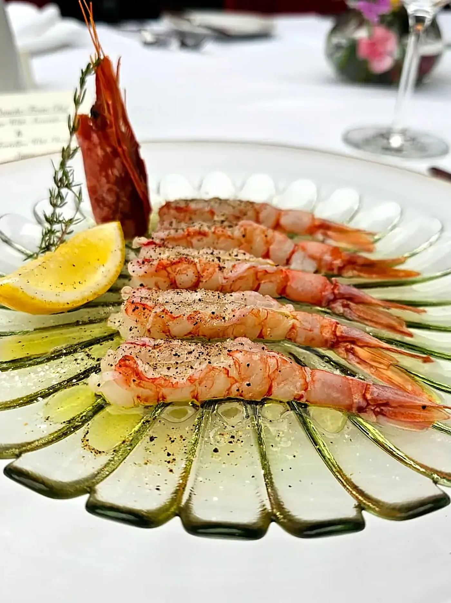
01
Langoustine
Delicate, sweet, served simply.
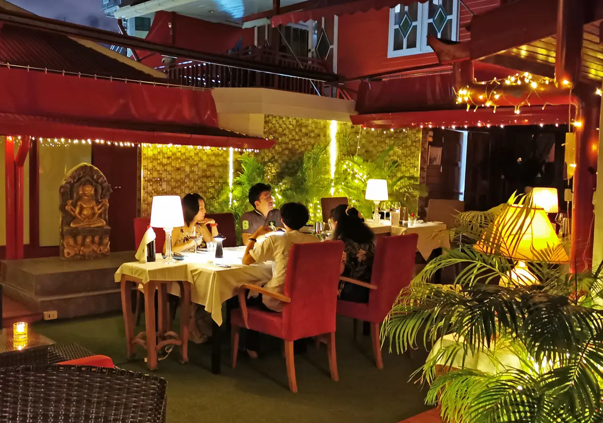
Fine dining · Pratumnak · Pattaya
European fine dining in a candle-lit garden — Alaskan King Crab, Kobe beef, Russian caviar and fresh truffles, every night from five.
01The philosophy
Thoughtfulness can be tasted. The best of land and sea, flown in for you — served slowly, under candlelight, in a garden in the heart of Pratumnak.
02Signatures — drag the night sideways
01 / 06

Delicate, sweet, served simply.
Flown in, at its best.
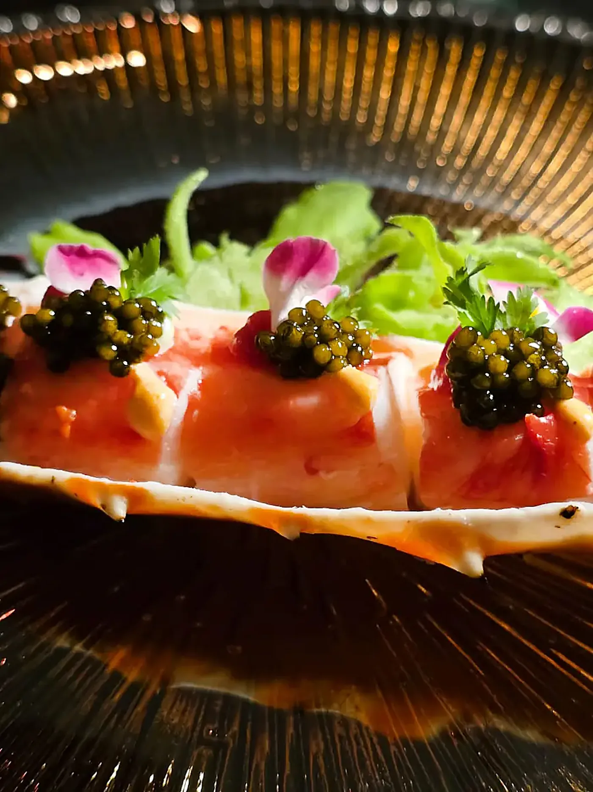
A quiet luxury to begin.
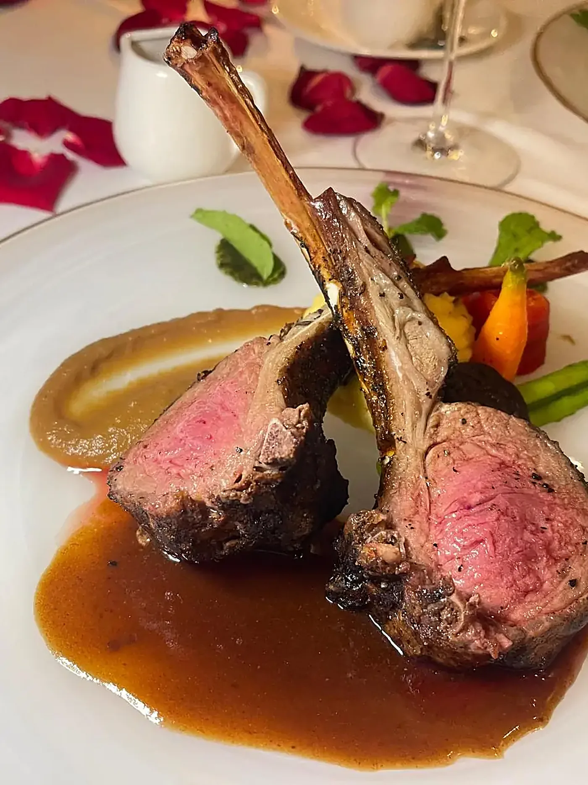
From the land, with care.
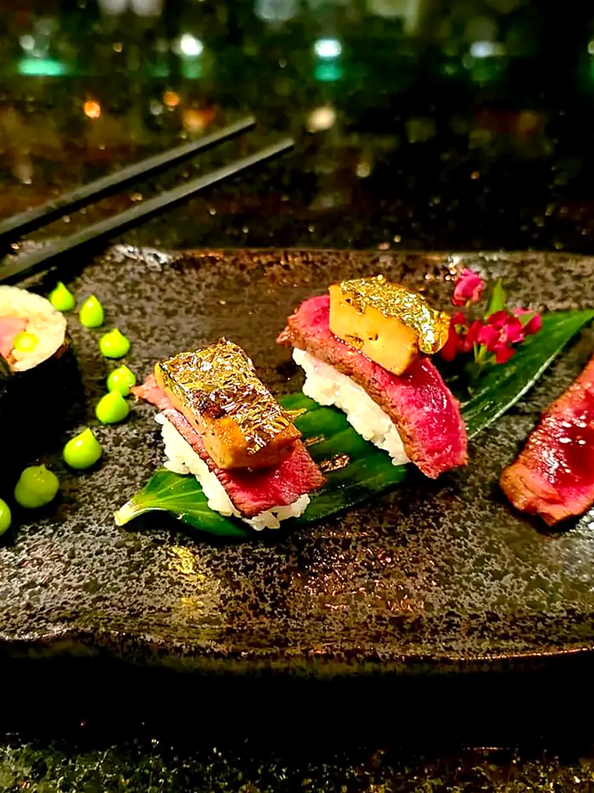
The finest cuts we can find.
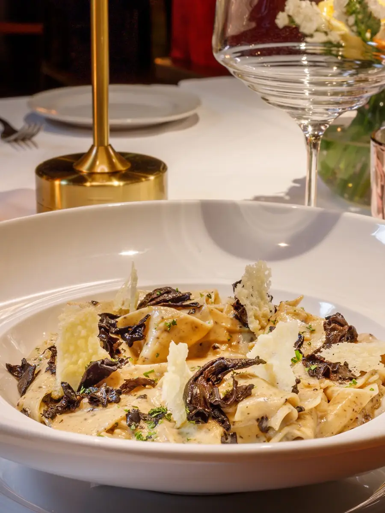
Shaved at the table, in season.
02bThe house
A candle-lit garden in Pratumnak, tables cooled individually, a roof that closes when the heavens weep — and a kitchen that flies in the best of land and sea.
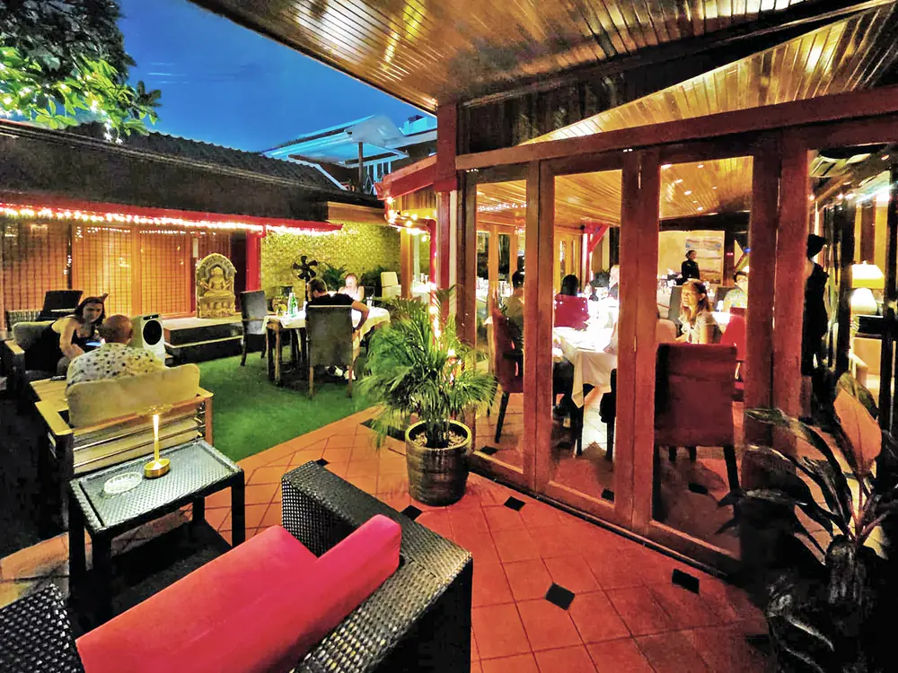
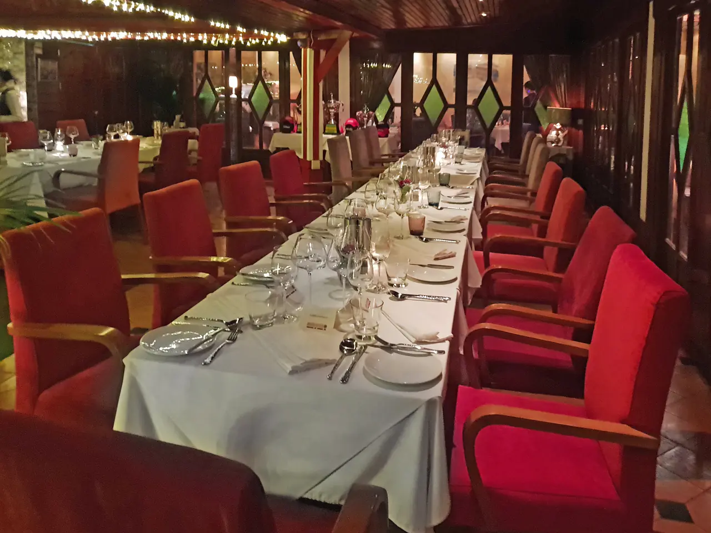
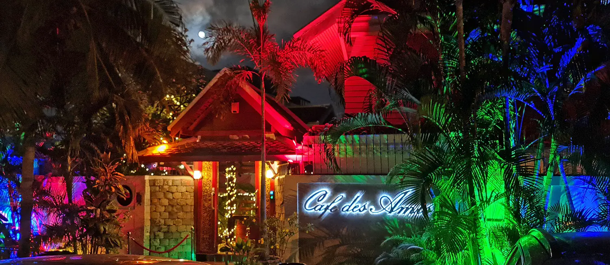
02cSignatures, editorially
Chilled, with caviar & wasabi dressing.
฿1,490Prawn fagottini, lobster & cognac sauce.
฿89015g
฿1,800Thomas Farms Australia, cherry red-wine rosemary sauce.
฿1,190Prices transcribed from the official menu, September 2026. Fresh truffle is sliced to order — price on request, subject to stock.
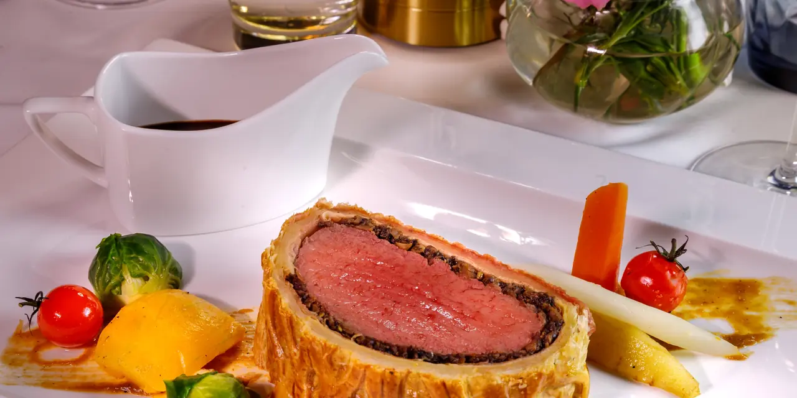
Scroll — the Wellington, closer
03Pre-order only
Jack’s Creek or Kimbara beef, wrapped and baked whole, carved at the table for three guests or more.
฿1,590 per person · min. 3 guests · deposit to pre-book
Pre-book on LINE04The garden
Each table has its own air-cooling unit and we protect your ankles from mosquitoes. When the heavens weep, we close the roof.
06The gin bar
From classic juniper to fruit-forward modern botanicals — prepare yourself for a wonderful gin journey.
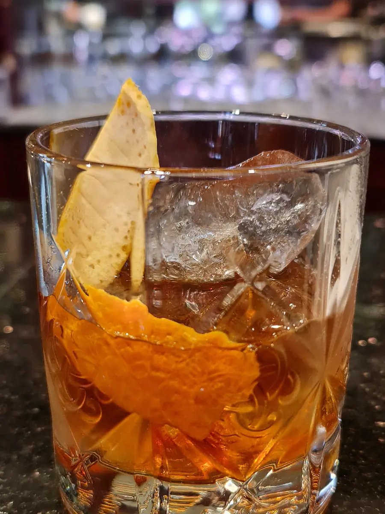
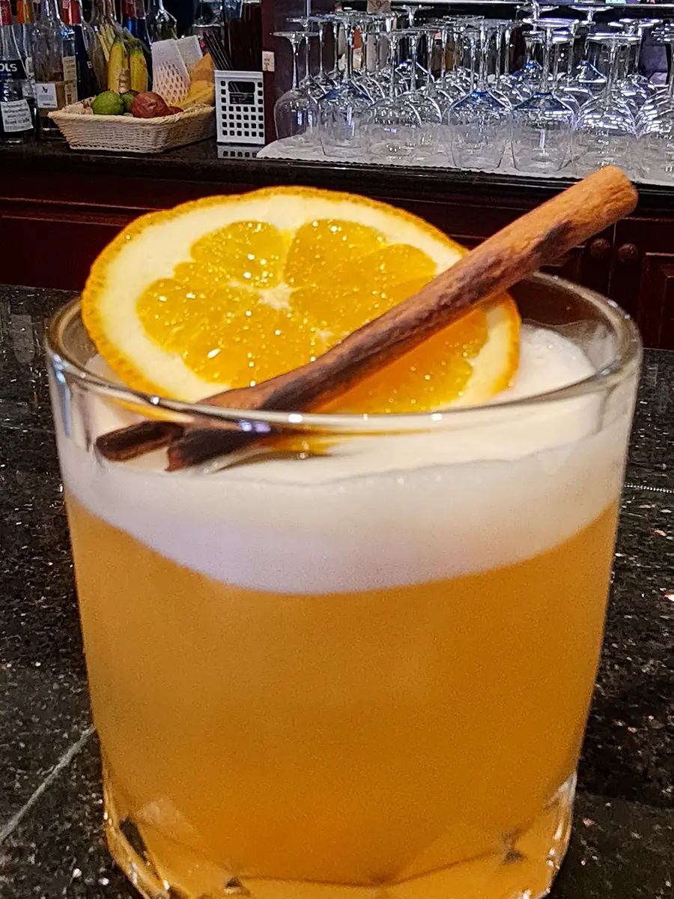
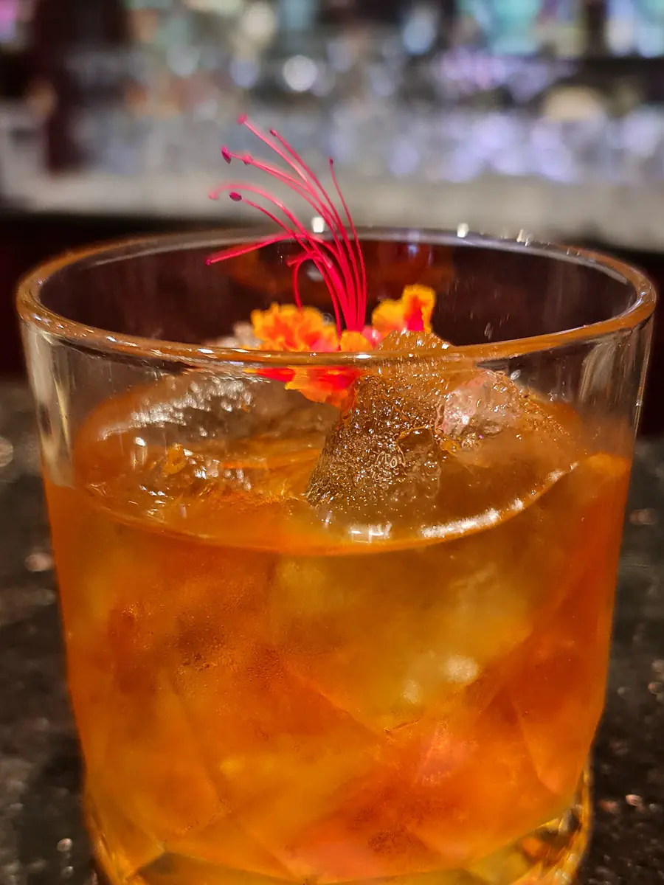
07Visit
17:00 – 23:00 · Open 7 days a week
391/6 Moo 10, Soi 11 Thappraya, Pattaya 20260 · Find us on Maps ↗
A booking deposit is required for large tables.